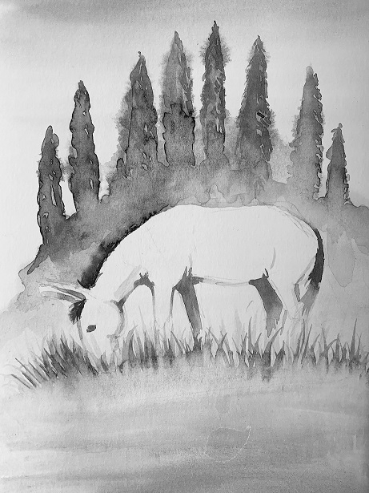
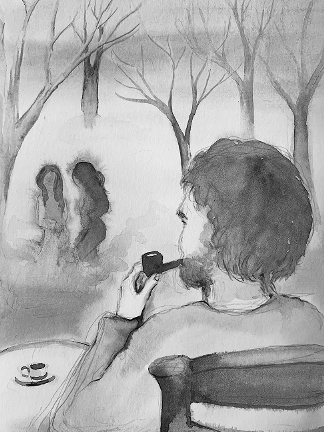
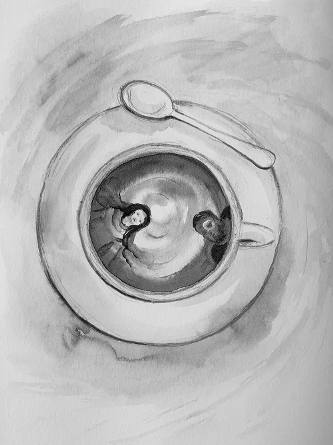

I'd really like again to live
Not this long, but longer still.
Would I then have more to give
With more to feel but weaker will?
There was a time in northern climes
When I thought and felt and sought
And willed, but failed in troubled times;
And countless were the lies I bought.
Then in seasons southern born
Fluttered the spirit's broken wing,
Or was it an angel in female form
Whose beauty made the cosmos sing?
When I ask myself what
I'm doing here I shake my head.
It's neither cold here nor hot,
The feeling I have is one of dread.
For what if I'd traveled so long and far
With little to show than a belly pot?
Well, but I loved and went to war
The war was won, the love was not.
You think it depends on what you choose.
You better think again, baby
And heed the Reincarnation Blues:
Fate does the choosing, and I don't mean maybe.
Christ Comes to Skopelos

Christ consents to be called
To Skopelos
One Easter Sunday
Several years before his year
Two-thousand.
They'd been calling him continually
In all their white-walled
Icon-laden churches,
Never expecting he'd hear their songs.
He heard but will come instead
To a hill above the town
Where a donkey grazes
And cypresses stand in rows
Like green flame.
No one will see him
No one will hear him
When Christ consents to be called
To Skopelos
One Easter Sunday still to come.
+
Christ came to Skopelos
One Easter Sunday
Several years beyond the year
Two-thousand.
They'd been calling him relentlessly
In all their white-walled
Icon-laden churches,
Never expecting he'd hear their chants.
He heard, but came instead
To a hill above the town
Where a donkey grazes still
And cypresses stand in rows
Like green flame.
No one saw him,
No one heard him
When Christ came to Skopelos
One Easter Sunday not so long ago.
The Three is One

Forward
Taking my son to the Collegium Musicum
Is good for his musical future, no doubt;
For me it has advantages, too:
The hour and forty minutes spent
Waiting at the sunny outdoor cafe
Give me a chance to think and watch.
The bow-tied black-vested waiter
Brings my cafecito without
being told - and sweet cookies.
The unkempt park across the street,
The flower-printed tablecloths,
Sunglasses in winter, women in jeans,
Trains passing (newly privatized),
The kiosco "Revistas - Diarios",
Men smoking, uninhibited here.
I light my pipe, puff blissfully,
My thoughts contain the past, no
Avoiding that, the future less
Suppressed. What's uppermost is now.
If life is all and this is happiness,
How on earth can death be less?
If life is all, then this is all
And death is all, it follows.
Such thoughts were once reserved
For the philosopher's dreary den,
Here they stoop to invitations
From cafe idlers, now and then.
The First Circle
A young woman passes my table,
pretty thing with long dark hair
cut abruptly down her back,
Shoulder bag, jeans, enigmatic smile.
Fifty years from now she'll ask
why she did what she did
and wonder what's next on the agenda.
She'll even know it'll soon be over.
Maybe centuries on from now
She'll sit pensive at a cafe table,
see me passing by and wonder
who I am and we'll close a circle,
one of three.
The Second Circle
A boy waits for the waiter to go
Then darts through the noonday traffic.
Black dilated eyes are fixed
On each patron, bare arm extends
a stubby nail-bitten hand.
The tanned man sees only the hand,
doesn't look up from his paper, shakes
his leonine head: no, no.
Two women in fur ignore
the hand, the eyes, the begging boy.
He comes to me. I've read too
that such as he are exploited by
their masters and giving makes it worse.
I don't know, it may be true,
but what is truth in ignorance?
I give him a peso anyway
in case some day the roles reverse
and I'll be he and he'll be me.
A circle is closed, the second of three.
The Third Circle

The earth is round, more or less,
As are the heads on our shoulders.
My coffee cup, from the bird's-eye view,
Is round and two-dimensional.
The universe seems to have
The shape of an infinite bubble.
Is this what makes the world go round?
No, it's not enough, this observed,
partly thought-out rotundity.
The unexpected blow, the theft,
The unknown assassin's thrust,
The smiling traitor's perfidious lie
All smudge the portrait's splendor.
An imponderable upsets the equation:
She rounds the corner and looks about
Like a lost child in a fairy fable
She makes her way to my shaded table.
And takes her place across from me,
For love is an ellipse and the three is one.